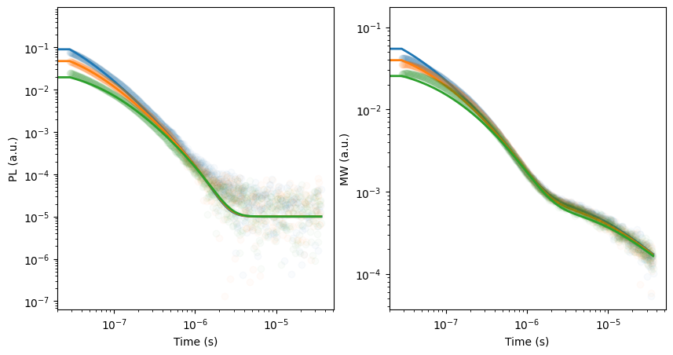
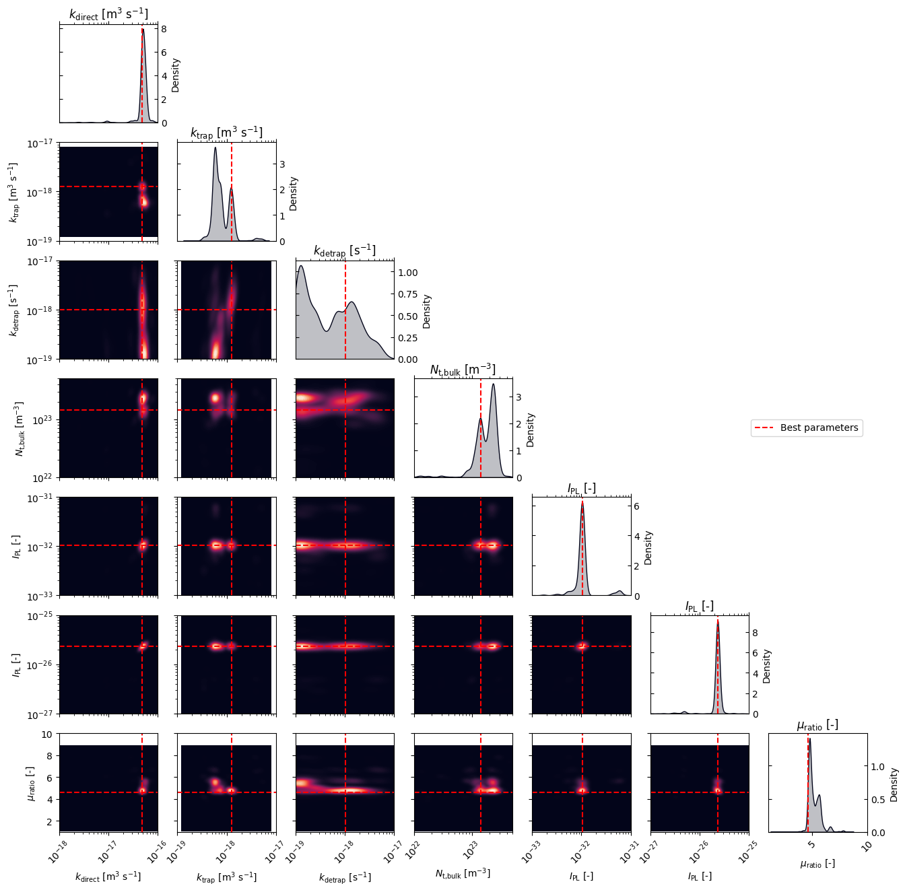
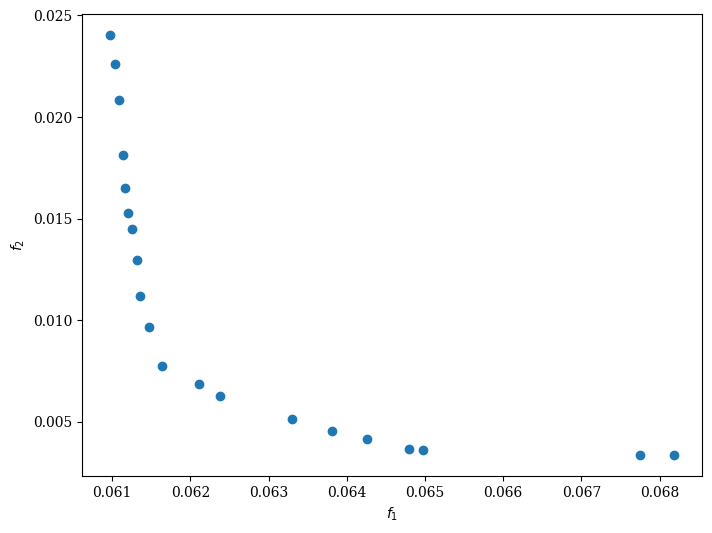
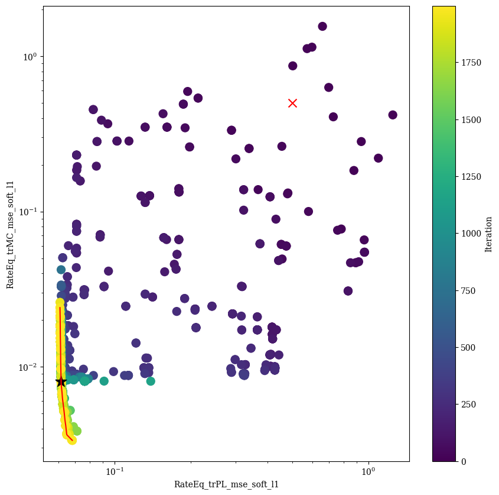
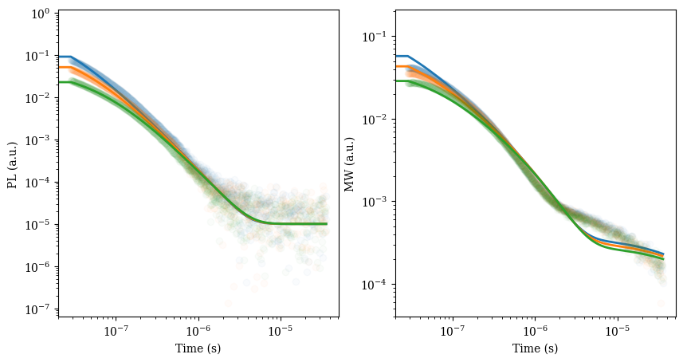

Multi-objective BO: Fit of transient photoluminescence (TrPL) and transient microwave conductivity (trMC) with rate equations
This example demonstrates how to fit transient photoluminescence (TrPL) and transient microwave conductivity (trMC) data simultaneously using a multi-objective optimization approach. The model is based on the rate equations for charge carrier dynamics in semiconductors, which include trapping and detraping processes. The model is described by the following set of differential equations:
\[\frac{dn}{dt} = G - k_{trap} n (Bulk_{tr} - n_t) - k_{direct} n (p + p_0)\]
\[\frac{dn_t}{dt}= k_{trap} n (Bulk_{tr} - n_t) - k_{detrap} n_t (p + p_0)\]
\[\frac{dp}{dt} = G - k_{detrap} n_t (p + p_0) - k_{direct} n (p + p_0)\]
where \(n\) and \(p\) are the electron and hole charge carrier densities, \(G\) is the generation rate in m⁻³ s⁻¹, ktrap and kdetrap are the trapping and detraping rates in m³ s⁻¹, and kdirect is the bimolecular/band-to-bad recombination rate in m³ s⁻¹. The TrPL signal is given by:
\[TrPL = I_{PL} k_{direct} n (p + p_0)\]where \(I_{PL}\) is a scaling factor for the PL signal.
The TrMC signal is given by:
\[TrMC = I_{MC} * (r_{\mu}*n + p)\]where \(r_{\mu}\) is the mobility ratio and \(I_{MC}\) is a scaling factor for the TrMC signal.
The data fitted in this notebook is taken from the following publication: C. Kupfer et al., Journal of Material Chemistry C, 2024, 12, 95-102
[ ]:
# Import necessary libraries
import warnings, os, sys
# remove warnings from the output
os.environ["PYTHONWARNINGS"] = "ignore"
warnings.filterwarnings(action='ignore', category=FutureWarning)
warnings.filterwarnings(action='ignore', category=UserWarning)
warnings.filterwarnings(action='ignore', category=RuntimeWarning)
import pandas as pd
import matplotlib.pyplot as plt
import numpy as np
from copy import deepcopy
try:
from optimpv import *
from optimpv.optimizers.pymooOpti.pymooOptimizer import PymooOptimizer
from optimpv.models.RateEqfits.RateEqAgent import RateEqAgent
from optimpv.models.RateEqfits.RateEqModel import *
from optimpv.models.RateEqfits.Pumps import *
except Exception as e:
sys.path.append('../') # add the path to the optimpv module
from optimpv import *
from optimpv.optimizers.pymooOpti.pymooOptimizer import PymooOptimizer
from optimpv.models.RateEqfits.RateEqAgent import RateEqAgent
from optimpv.models.RateEqfits.RateEqModel import *
from optimpv.models.RateEqfits.Pumps import *
Define the parameters for the simulation
[2]:
params = []
k_direct = FitParam(name = 'k_direct', value = 3.9e-17, bounds = [1e-18,1e-16], log_scale = True, rescale = True, value_type = 'float', type='range', display_name=r'$k_{\text{direct}}$', unit='m$^{3}$ s$^{-1}$', axis_type = 'log',force_log=True)
params.append(k_direct)
k_trap = FitParam(name = 'k_trap', value = 4e-18, bounds = [1e-19,1e-17], log_scale = True, rescale = True, value_type = 'float', type='range', display_name=r'$k_{\text{trap}}$', unit='m$^{3}$ s$^{-1}$', axis_type = 'log',force_log=True)
params.append(k_trap)
k_detrap = FitParam(name = 'k_detrap', value = 3.1e-18, bounds = [1e-19,1e-17], log_scale = True, rescale = True, value_type = 'float', type='range', display_name=r'$k_{\text{detrap}}$', unit='s$^{-1}$', axis_type = 'log',force_log=True)
params.append(k_detrap)
N_t_bulk = FitParam(name = 'N_t_bulk', value = 1.6e23, bounds = [1e22,5e23], log_scale = True, rescale = True, value_type = 'float', type='range', display_name=r'$N_{\text{t,bulk}}$', unit='m$^{-3}$', axis_type = 'log',force_log=True)
params.append(N_t_bulk)
I_factor_PL = FitParam(name = 'I_factor_PL', value = 1e-32, bounds = [1e-33,1e-31], log_scale = True, rescale = True, value_type = 'float', type='range', display_name=r'$I_{\text{PL}}$', unit='-', axis_type = 'log', force_log=True)
params.append(I_factor_PL)
I_factor_MC = FitParam(name = 'I_factor_MC', value = 2.2e-26, bounds = [1e-27,1e-25], log_scale = True, rescale = True, value_type = 'float', type='range', display_name=r'$I_{\text{PL}}$', unit='-', axis_type = 'log', force_log=True)
params.append(I_factor_MC)
ratio_mu = FitParam(name = 'ratio_mu', value = 4.2, bounds = [1,10], log_scale = True, rescale = True, value_type = 'float', type='range', display_name=r'$\mu_{\text{ratio}}$', unit='-', axis_type = 'linear', force_log=False)
params.append(ratio_mu)
Load and prepare the experimental data
[3]:
# Define the path to the data
curr_dir = os.getcwd()
parent_dir = os.path.abspath('../') # path to the parent directory if not in Notebooks use os.getcwd()
path2data = os.path.join(parent_dir,'Data','perovskite_trPL_trMC')
filenames = ['S25D1_L532_F0.csv','S25D1_L532_F1.csv','S25D1_L532_F2.csv'] # list of filenames to be analyzed
res_dir = os.path.join(parent_dir,'temp') # path to the results directory
# Select Gfracs used for the data
Gfracs = [1, 0.552, 0.290, 0.136, 0.087]
[4]:
# Create a class that contains to do some basic data processing on the data
class Experiment:
""" A set of measurements """
def __init__(self, path2data, filenames, Gfracs, laserCenter=0, num_pts=1e3, take_log=False):
self.path2data = path2data
self.filenames = filenames
self.Gfracs = Gfracs
self.laserCenter = laserCenter
self.num_pts = num_pts
self.take_log = take_log
self.get_data()
pass
def get_data(self):
self.X_raw, self.y_raw_MW, self.y_raw_PL = [],[],[]
for filename in self.filenames:
# Create empty lists to store data
X,y_MW, y_PL = [],[],[]
#Load file and extract data
with open(os.path.join(self.path2data, filename)) as f:
for line in f:
tmp=line.strip("\n").split(",")
X.append(float(tmp[3]))
y_MW.append(float(tmp[4]))
if len(tmp)>8:
y_PL.append(float(tmp[10]))
else:
raise ValueError("The file does not contain PL data")
# Create output arrays
self.X_raw.append(np.array(X))
self.y_raw_MW.append(np.array(y_MW))
self.y_raw_PL.append(np.array(y_PL))
pass
def process_data(self, cut_rise=False, cut_time=None, cut_sigma=False):
# Create empty lists to store data
X_out, y_out_MW, y_out_PL = [],[],[]
self.X_processed, self.y_processed_MW, self.y_processed_PL = [],[],[]
self.signalParams={}
self.background_out_PL=[]
# Data processing:
for X, y_MW, y_PL, Gfrac in zip(self.X_raw, self.y_raw_MW, self.y_raw_PL, self.Gfracs):
# Subtract the background from MW and PL data
index = np.where(X<(-10e-9)) # Calculate the background from the average of the signal up to 10ns before the peak (this buffer is to prevent the rise of the peak to affect the background)
self.signalParams["MW_background"] = np.mean(y_MW[index])
self.signalParams["PL_background"] = np.mean(y_PL[index])
self.signalParams["MW_sigma"] = np.std(y_MW[index])
self.signalParams["PL_sigma"] = np.std(y_PL[index])
y_MW = y_MW - self.signalParams["MW_background"]
y_PL = y_PL - self.signalParams["PL_background"]
print('PL Sigma {}, PL background {}, MW Sigma {}, MW background {}'.format(self.signalParams["PL_sigma"],self.signalParams["PL_background"],self.signalParams["MW_sigma"],self.signalParams["MW_background"]))
# Find the peak position
self.signalParams["index_max_MW"] = np.argmax(abs(y_MW))
self.signalParams["index_max_PL"] = np.argmax(abs(y_PL))
# Find the sign of the peak
self.signalParams["sign_max_MW"] = np.sign(y_MW[self.signalParams["index_max_MW"]])
self.signalParams["sign_max_PL"] = np.sign(y_PL[self.signalParams["index_max_PL"]])
# Remove datapoints at the beginning of the signal
if cut_rise == "MW":
index = np.where(X >= X[self.signalParams["index_max_MW"]])
elif cut_rise == "PL":
index = np.where(X >= X[self.signalParams["index_max_PL"]])
elif cut_rise == "Time":
index = np.where(X > cut_time)
else:
index = np.where(X > self.laserCenter)
X = X[index]
# Remove datapoints before the laser peak from the MW and PL signal and make sure, that the peak is positive
y_MW = y_MW[index]*self.signalParams["sign_max_MW"]
y_PL = y_PL[index]*self.signalParams["sign_max_PL"]
# Remove datapoints that aren't significant enough (in either measurement)
if cut_sigma:
sigma = float(cut_sigma)
index = np.where((np.abs(y_MW)>sigma*self.signalParams["MW_sigma"]) & (np.abs(y_PL)>sigma*self.signalParams["PL_sigma"]))
X = X[index]
y_MW = y_MW[index]
y_PL = y_PL[index]
# Interpolate to get num_pts
X_interp = np.geomspace(X[1],X[-1],int(self.num_pts))
# Add 0 to the beginning of X_interp
X_interp = np.insert(X_interp,0,0)
y_interp_MW = np.interp(X_interp,X,y_MW)
y_interp_PL = np.interp(X_interp,X,y_PL)
# Take the log of the data
if self.take_log:
y_interp_MW = np.log10(y_interp_MW)
y_interp_PL = np.log10(y_interp_PL)
# Remove all data points where either signal is NaN
mask_NaNs = np.logical_or(np.isnan(y_interp_PL), np.isnan(y_interp_MW))
X_interp = X_interp[~mask_NaNs]
y_interp_MW = y_interp_MW[~mask_NaNs]
y_interp_PL = y_interp_PL[~mask_NaNs]
print('Removed {} Data Points while taking the logarithm!'.format(np.count_nonzero(mask_NaNs)))
# Append the data to the output
for i in range(len(X_interp)):
X_out.append([X_interp[i],Gfrac])
y_out_MW.append(y_interp_MW[i])
y_out_PL.append(y_interp_PL[i])
self.background_out_PL.append(self.signalParams["PL_sigma"]*np.sqrt(2/np.pi))
self.X_processed.append(np.array(X_interp))
self.y_processed_MW.append(np.array(y_interp_MW))
self.y_processed_PL.append(np.array(y_interp_PL))
# Convert the output to arrays
self.X = np.array(X_out)
self.y_MW = np.array(y_out_MW)
self.y_PL = np.array(y_out_PL)
pass
[5]:
# Load the data and process it
data_exp = Experiment(path2data, filenames, Gfracs, laserCenter=2.8E-8, take_log=False)
data_exp.process_data(cut_rise=False, cut_time=None ,cut_sigma=0)
X = data_exp.X
y_MW = data_exp.y_MW
y_PL = data_exp.y_PL
back_PL = data_exp.background_out_PL
# remove all point where PL is below 0
mask = np.where(y_PL<0)
y_PL = np.delete(y_PL,mask)
X = np.delete(X,mask,axis=0)
y_MW = np.delete(y_MW,mask)
back_PL = np.delete(back_PL,mask)
# remove all point where MW is below 0
mask = np.where(y_MW<0)
y_MW = np.delete(y_MW,mask)
X = np.delete(X,mask,axis=0)
y_PL = np.delete(y_PL,mask)
back_PL = np.delete(back_PL,mask)
from sklearn.preprocessing import minmax_scale
# Assign weights based on the signal strength
weight_PL = None #1/(np.abs(y_PL))
weight_MW = None #1/(np.abs(y_MW))
# weight_MW = minmax_scale(weight_MW, feature_range=(1,1000))
PL Sigma 2.9602988876119335e-05, PL background -0.003598912016122306, MW Sigma 3.780285415804477e-05, MW background -0.0007008701257225716
PL Sigma 3.0399603508164594e-05, PL background -0.003610847480546366, MW Sigma 4.040993545427417e-05, MW background -0.0008486578742130771
PL Sigma 2.5489343983201138e-05, PL background -0.0031102876606446113, MW Sigma 3.75774071903544e-05, MW background -0.0009373141997225259
[6]:
# RateEqModel parameters
fpu = 1e3 # Frequency of the pump laser in Hz
N0 = 1.041e24 # Initial carrier density in m-3
background = 0 # Background illumination
Gfracs = [1, 0.552, 0.290] # Gfracs used for the data
# Define the Agent and the target metric/loss function
metric = 'mse'
loss = 'soft_l1'
pump_args = {'N0': N0, 'fpu': fpu , 'background' : background, }
# 50 log spaced points data X, y_PL, y_MW
# t_min except 0
num_pts = 20
t_min = X[X[:,0]>0,0].min()
X_log = np.geomspace(t_min,X[:,0].max(),num_pts)
X_log = np.insert(X_log,0,0)
# get teh closest 50 points to the log spaced points
X_50 = np.zeros((int(len(X_log)*len(Gfracs)),2))
y_PL_50 = np.zeros(int(len(X_log)*len(Gfracs)))
y_MW_50 = np.zeros(int(len(X_log)*len(Gfracs)))
idx_main = 0
for g in Gfracs:
idx = 0
for i in range(len(X_log)):
index = np.argmin(abs(X[X[:,1]==g,0]-X_log[idx]))
X_50[idx_main] = X[X[:,1]==g][index]
y_PL_50[idx_main] = y_PL[X[:,1]==g][index]
y_MW_50[idx_main] = y_MW[X[:,1]==g][index]
idx += 1
idx_main += 1
RateEq = RateEqAgent(params, [X,X], [y_PL,y_MW], model = BTD_model, pump_model = initial_carrier_density, pump_args = pump_args, fixed_model_args = {}, metric = [metric,metric], loss = [loss,loss], threshold=[0.5,0.5],minimize=[True,True],exp_format=['trPL','trMC'],detection_limit=1e-5, weight=[weight_PL,weight_MW], transforms ='log')
# Not necessary, but here we run the simulation with the parameters to test the model
# Run the simulation with the parameters
y_PL_fit = RateEq.run(parameters={},exp_format='trPL')
y_MC_fit = RateEq.run(parameters={},exp_format='trMC')
print(RateEq.run_Ax(parameters={}))
# Make a plot with 2 subplots for PL and MW
fig, (ax1, ax2) = plt.subplots(1, 2,figsize=(10,5))
for i in range(len(data_exp.X_processed)):
ax1.semilogx(data_exp.X_processed[i], data_exp.y_processed_PL[i], 'o', label=data_exp.Gfracs[i],color='C'+str(i),alpha=0.025)
ax1.plot(X[X[:,1]==Gfracs[i],0], y_PL_fit[X[:,1]==Gfracs[i]],'-',label=str(Gfracs[i]), color = 'C'+str(i), linewidth=2)
ax2.semilogx(data_exp.X_processed[i], data_exp.y_processed_MW[i], 'o', label=data_exp.Gfracs[i],color='C'+str(i),alpha=0.025)
ax2.plot(X[X[:,1]==Gfracs[i],0], y_MC_fit[X[:,1]==Gfracs[i]],'-',label=str(Gfracs[i]), color = 'C'+str(i), linewidth=2)
# ax1.plot(X_50[X_50[:,1]==Gfracs[i],0], y_PL_50[X_50[:,1]==Gfracs[i]],'o',label=str(Gfracs[i]), color = 'r')
# ax2.plot(X_50[X_50[:,1]==Gfracs[i],0], y_MW_50[X_50[:,1]==Gfracs[i]],'o',label=str(Gfracs[i]), color = 'r')
ax1.set_xscale('log')
ax1.set_yscale('log')
ax2.set_xscale('log')
ax2.set_yscale('log')
ax1.set_xlabel('Time (s)')
ax1.set_ylabel('PL (a.u.)')
ax2.set_xlabel('Time (s)')
ax2.set_ylabel('MW (a.u.)')
{'RateEq_trPL_mse_soft_l1': 0.06916844589940263, 'RateEq_trMC_mse_soft_l1': 0.0019317690776468055}
[6]:
Text(0, 0.5, 'MW (a.u.)')

Run the optimization
[7]:
# Define the optimizer
optimizer = PymooOptimizer(params=params, agents=RateEq, algorithm='NSGA2', pop_size=20, n_gen=100, name='pymoo_multi_obj', verbose_logging=True,max_parallelism=20, )
[8]:
res = optimizer.optimize() # run the optimization with ax
[INFO 12-05 12:59:05] optimpv.pymooOptimizer: Starting optimization using NSGA2 algorithm
[INFO 12-05 12:59:05] optimpv.pymooOptimizer: Population size: 20, Generations: 100
[INFO 12-05 12:59:05] optimpv.pymooOptimizer: Generation 1: Best objective = 0.017988
==========================================================
n_gen | n_eval | n_nds | eps | indicator
==========================================================
1 | 20 | 3 | - | -
[INFO 12-05 12:59:06] optimpv.pymooOptimizer: Generation 2: Best objective = 0.017988
2 | 40 | 4 | 0.0805748586 | f
[INFO 12-05 12:59:06] optimpv.pymooOptimizer: Generation 3: Best objective = 0.016176
3 | 60 | 5 | 0.1858419378 | ideal
[INFO 12-05 12:59:07] optimpv.pymooOptimizer: Generation 4: Best objective = 0.015128
4 | 80 | 7 | 0.0252655532 | ideal
[INFO 12-05 12:59:07] optimpv.pymooOptimizer: Generation 5: Best objective = 0.015128
5 | 100 | 9 | 0.0665949978 | ideal
[INFO 12-05 12:59:08] optimpv.pymooOptimizer: Generation 6: Best objective = 0.011929
6 | 120 | 9 | 0.0145959918 | ideal
[INFO 12-05 12:59:08] optimpv.pymooOptimizer: Generation 7: Best objective = 0.010065
7 | 140 | 11 | 0.0084330871 | ideal
[INFO 12-05 12:59:09] optimpv.pymooOptimizer: Generation 8: Best objective = 0.009996
8 | 160 | 11 | 2.1240533128 | nadir
[INFO 12-05 12:59:09] optimpv.pymooOptimizer: Generation 9: Best objective = 0.009518
9 | 180 | 12 | 0.0067111909 | ideal
[INFO 12-05 12:59:10] optimpv.pymooOptimizer: Generation 10: Best objective = 0.009518
10 | 200 | 11 | 0.5448382777 | nadir
[INFO 12-05 12:59:10] optimpv.pymooOptimizer: Generation 11: Best objective = 0.009518
11 | 220 | 10 | 0.0133563379 | ideal
[INFO 12-05 12:59:11] optimpv.pymooOptimizer: Generation 12: Best objective = 0.009518
12 | 240 | 7 | 0.2533072116 | nadir
[INFO 12-05 12:59:13] optimpv.pymooOptimizer: Generation 13: Best objective = 0.009011
13 | 260 | 6 | 0.0228792090 | ideal
[INFO 12-05 12:59:13] optimpv.pymooOptimizer: Generation 14: Best objective = 0.009011
14 | 280 | 8 | 0.0056443284 | ideal
[INFO 12-05 12:59:14] optimpv.pymooOptimizer: Generation 15: Best objective = 0.008801
15 | 300 | 10 | 0.0147442487 | ideal
[INFO 12-05 12:59:14] optimpv.pymooOptimizer: Generation 16: Best objective = 0.008798
16 | 320 | 7 | 4.1308315741 | nadir
[INFO 12-05 12:59:16] optimpv.pymooOptimizer: Generation 17: Best objective = 0.008798
17 | 340 | 7 | 0.0108028813 | ideal
[INFO 12-05 12:59:17] optimpv.pymooOptimizer: Generation 18: Best objective = 0.008774
18 | 360 | 5 | 5.0611785469 | nadir
[INFO 12-05 12:59:17] optimpv.pymooOptimizer: Generation 19: Best objective = 0.008774
19 | 380 | 5 | 0.0332182804 | f
[INFO 12-05 12:59:19] optimpv.pymooOptimizer: Generation 20: Best objective = 0.008722
20 | 400 | 4 | 0.0048603838 | ideal
[INFO 12-05 12:59:21] optimpv.pymooOptimizer: Generation 21: Best objective = 0.008722
21 | 420 | 5 | 0.0232953834 | ideal
[INFO 12-05 12:59:22] optimpv.pymooOptimizer: Generation 22: Best objective = 0.008722
22 | 440 | 8 | 0.0323922443 | f
[INFO 12-05 12:59:23] optimpv.pymooOptimizer: Generation 23: Best objective = 0.008722
23 | 460 | 6 | 0.1454173514 | nadir
[INFO 12-05 12:59:24] optimpv.pymooOptimizer: Generation 24: Best objective = 0.008722
24 | 480 | 9 | 0.0313622160 | f
[INFO 12-05 12:59:25] optimpv.pymooOptimizer: Generation 25: Best objective = 0.008720
25 | 500 | 13 | 0.0068122544 | nadir
[INFO 12-05 12:59:25] optimpv.pymooOptimizer: Generation 26: Best objective = 0.008718
26 | 520 | 14 | 0.0094633096 | ideal
[INFO 12-05 12:59:26] optimpv.pymooOptimizer: Generation 27: Best objective = 0.008718
27 | 540 | 13 | 0.0139464642 | f
[INFO 12-05 12:59:26] optimpv.pymooOptimizer: Generation 28: Best objective = 0.008718
28 | 560 | 15 | 0.0028448793 | ideal
[INFO 12-05 12:59:27] optimpv.pymooOptimizer: Generation 29: Best objective = 0.008718
29 | 580 | 19 | 0.4906859698 | nadir
[INFO 12-05 12:59:28] optimpv.pymooOptimizer: Generation 30: Best objective = 0.008718
30 | 600 | 13 | 0.0166477669 | ideal
[INFO 12-05 12:59:28] optimpv.pymooOptimizer: Generation 31: Best objective = 0.008713
31 | 620 | 13 | 0.0690105080 | nadir
[INFO 12-05 12:59:29] optimpv.pymooOptimizer: Generation 32: Best objective = 0.008713
32 | 640 | 16 | 0.0036625650 | f
[INFO 12-05 12:59:30] optimpv.pymooOptimizer: Generation 33: Best objective = 0.008713
33 | 660 | 14 | 0.1462261896 | nadir
[INFO 12-05 12:59:30] optimpv.pymooOptimizer: Generation 34: Best objective = 0.008713
34 | 680 | 13 | 0.0091392532 | f
[INFO 12-05 12:59:32] optimpv.pymooOptimizer: Generation 35: Best objective = 0.008713
35 | 700 | 15 | 0.0000515228 | f
[INFO 12-05 12:59:34] optimpv.pymooOptimizer: Generation 36: Best objective = 0.008713
36 | 720 | 18 | 0.0086364360 | ideal
[INFO 12-05 12:59:34] optimpv.pymooOptimizer: Generation 37: Best objective = 0.008593
37 | 740 | 13 | 0.0151325289 | ideal
[INFO 12-05 12:59:36] optimpv.pymooOptimizer: Generation 38: Best objective = 0.008572
38 | 760 | 14 | 0.0027364208 | ideal
[INFO 12-05 12:59:38] optimpv.pymooOptimizer: Generation 39: Best objective = 0.008572
39 | 780 | 9 | 0.0057793014 | ideal
[INFO 12-05 12:59:38] optimpv.pymooOptimizer: Generation 40: Best objective = 0.008572
40 | 800 | 10 | 0.0094331661 | f
[INFO 12-05 12:59:39] optimpv.pymooOptimizer: Generation 41: Best objective = 0.008572
41 | 820 | 14 | 0.0050950759 | f
[INFO 12-05 12:59:40] optimpv.pymooOptimizer: Generation 42: Best objective = 0.008572
42 | 840 | 14 | 0.0147708983 | ideal
[INFO 12-05 12:59:40] optimpv.pymooOptimizer: Generation 43: Best objective = 0.008328
43 | 860 | 17 | 0.0292077359 | ideal
[INFO 12-05 12:59:41] optimpv.pymooOptimizer: Generation 44: Best objective = 0.008328
44 | 880 | 12 | 0.0212495327 | f
[INFO 12-05 12:59:41] optimpv.pymooOptimizer: Generation 45: Best objective = 0.008328
45 | 900 | 12 | 0.0126330112 | nadir
[INFO 12-05 12:59:42] optimpv.pymooOptimizer: Generation 46: Best objective = 0.008232
46 | 920 | 13 | 0.0112655764 | ideal
[INFO 12-05 12:59:44] optimpv.pymooOptimizer: Generation 47: Best objective = 0.008079
47 | 940 | 12 | 0.0175320081 | ideal
[INFO 12-05 12:59:44] optimpv.pymooOptimizer: Generation 48: Best objective = 0.008079
48 | 960 | 14 | 0.0087715667 | f
[INFO 12-05 12:59:45] optimpv.pymooOptimizer: Generation 49: Best objective = 0.008079
49 | 980 | 14 | 0.0009351437 | f
[INFO 12-05 12:59:45] optimpv.pymooOptimizer: Generation 50: Best objective = 0.008078
50 | 1000 | 16 | 0.1427158064 | nadir
[INFO 12-05 12:59:46] optimpv.pymooOptimizer: Generation 51: Best objective = 0.008078
51 | 1020 | 17 | 0.0003877015 | f
[INFO 12-05 12:59:47] optimpv.pymooOptimizer: Generation 52: Best objective = 0.008078
52 | 1040 | 10 | 0.1364997048 | nadir
[INFO 12-05 12:59:47] optimpv.pymooOptimizer: Generation 53: Best objective = 0.008078
53 | 1060 | 14 | 0.0201600723 | f
[INFO 12-05 12:59:48] optimpv.pymooOptimizer: Generation 54: Best objective = 0.008078
54 | 1080 | 14 | 0.0063372363 | f
[INFO 12-05 12:59:48] optimpv.pymooOptimizer: Generation 55: Best objective = 0.008078
55 | 1100 | 12 | 3.5608504748 | nadir
[INFO 12-05 12:59:49] optimpv.pymooOptimizer: Generation 56: Best objective = 0.008078
56 | 1120 | 11 | 0.0065829251 | f
[INFO 12-05 12:59:49] optimpv.pymooOptimizer: Generation 57: Best objective = 0.008063
57 | 1140 | 9 | 0.1015375491 | ideal
[INFO 12-05 12:59:50] optimpv.pymooOptimizer: Generation 58: Best objective = 0.008045
58 | 1160 | 9 | 0.0221310869 | ideal
[INFO 12-05 12:59:50] optimpv.pymooOptimizer: Generation 59: Best objective = 0.008045
59 | 1180 | 10 | 0.0241828979 | ideal
[INFO 12-05 12:59:51] optimpv.pymooOptimizer: Generation 60: Best objective = 0.007995
60 | 1200 | 12 | 0.0046671393 | ideal
[INFO 12-05 12:59:51] optimpv.pymooOptimizer: Generation 61: Best objective = 0.006973
61 | 1220 | 11 | 0.0870943561 | ideal
[INFO 12-05 12:59:52] optimpv.pymooOptimizer: Generation 62: Best objective = 0.006921
62 | 1240 | 15 | 0.0043956875 | ideal
[INFO 12-05 12:59:52] optimpv.pymooOptimizer: Generation 63: Best objective = 0.006921
63 | 1260 | 18 | 0.0163376095 | f
[INFO 12-05 12:59:53] optimpv.pymooOptimizer: Generation 64: Best objective = 0.006921
64 | 1280 | 20 | 0.0108176708 | f
[INFO 12-05 12:59:53] optimpv.pymooOptimizer: Generation 65: Best objective = 0.006850
65 | 1300 | 20 | 0.0060111684 | ideal
[INFO 12-05 12:59:54] optimpv.pymooOptimizer: Generation 66: Best objective = 0.006258
66 | 1320 | 20 | 0.0469148942 | ideal
[INFO 12-05 12:59:54] optimpv.pymooOptimizer: Generation 67: Best objective = 0.006258
67 | 1340 | 20 | 0.0066412641 | f
[INFO 12-05 12:59:55] optimpv.pymooOptimizer: Generation 68: Best objective = 0.005864
68 | 1360 | 20 | 0.0474700839 | ideal
[INFO 12-05 12:59:55] optimpv.pymooOptimizer: Generation 69: Best objective = 0.005864
69 | 1380 | 20 | 0.0109240624 | f
[INFO 12-05 12:59:56] optimpv.pymooOptimizer: Generation 70: Best objective = 0.005864
70 | 1400 | 20 | 0.0070489221 | f
[INFO 12-05 12:59:56] optimpv.pymooOptimizer: Generation 71: Best objective = 0.005864
71 | 1420 | 20 | 0.0114690899 | f
[INFO 12-05 12:59:57] optimpv.pymooOptimizer: Generation 72: Best objective = 0.005864
72 | 1440 | 20 | 0.0032436096 | ideal
[INFO 12-05 12:59:58] optimpv.pymooOptimizer: Generation 73: Best objective = 0.005813
73 | 1460 | 20 | 0.0042554434 | ideal
[INFO 12-05 12:59:59] optimpv.pymooOptimizer: Generation 74: Best objective = 0.005232
74 | 1480 | 20 | 0.0684402045 | ideal
[INFO 12-05 12:59:59] optimpv.pymooOptimizer: Generation 75: Best objective = 0.005232
75 | 1500 | 20 | 0.0070399354 | f
[INFO 12-05 13:00:00] optimpv.pymooOptimizer: Generation 76: Best objective = 0.005099
76 | 1520 | 20 | 0.0154819389 | ideal
[INFO 12-05 13:00:00] optimpv.pymooOptimizer: Generation 77: Best objective = 0.005099
77 | 1540 | 20 | 0.0098073254 | f
[INFO 12-05 13:00:01] optimpv.pymooOptimizer: Generation 78: Best objective = 0.005099
78 | 1560 | 20 | 0.3616104143 | nadir
[INFO 12-05 13:00:01] optimpv.pymooOptimizer: Generation 79: Best objective = 0.005099
79 | 1580 | 20 | 0.0161486366 | f
[INFO 12-05 13:00:02] optimpv.pymooOptimizer: Generation 80: Best objective = 0.005099
80 | 1600 | 20 | 0.0119090536 | f
[INFO 12-05 13:00:02] optimpv.pymooOptimizer: Generation 81: Best objective = 0.004526
81 | 1620 | 20 | 0.0691755826 | ideal
[INFO 12-05 13:00:03] optimpv.pymooOptimizer: Generation 82: Best objective = 0.003851
82 | 1640 | 20 | 0.0754620801 | ideal
[INFO 12-05 13:00:03] optimpv.pymooOptimizer: Generation 83: Best objective = 0.003851
83 | 1660 | 20 | 0.0159765280 | f
[INFO 12-05 13:00:04] optimpv.pymooOptimizer: Generation 84: Best objective = 0.003756
84 | 1680 | 20 | 0.0120580046 | ideal
[INFO 12-05 13:00:04] optimpv.pymooOptimizer: Generation 85: Best objective = 0.003756
85 | 1700 | 20 | 0.0054148448 | f
[INFO 12-05 13:00:05] optimpv.pymooOptimizer: Generation 86: Best objective = 0.003736
86 | 1720 | 20 | 0.0218163941 | ideal
[INFO 12-05 13:00:05] optimpv.pymooOptimizer: Generation 87: Best objective = 0.003736
87 | 1740 | 20 | 0.0028697210 | ideal
[INFO 12-05 13:00:05] optimpv.pymooOptimizer: Generation 88: Best objective = 0.003736
88 | 1760 | 20 | 0.0102109483 | f
[INFO 12-05 13:00:06] optimpv.pymooOptimizer: Generation 89: Best objective = 0.003736
89 | 1780 | 20 | 0.0104045444 | f
[INFO 12-05 13:00:06] optimpv.pymooOptimizer: Generation 90: Best objective = 0.003736
90 | 1800 | 20 | 0.0035027299 | ideal
[INFO 12-05 13:00:07] optimpv.pymooOptimizer: Generation 91: Best objective = 0.003736
91 | 1820 | 20 | 0.0141494023 | ideal
[INFO 12-05 13:00:07] optimpv.pymooOptimizer: Generation 92: Best objective = 0.003736
92 | 1840 | 20 | 0.0037389118 | f
[INFO 12-05 13:00:08] optimpv.pymooOptimizer: Generation 93: Best objective = 0.003728
93 | 1860 | 20 | 0.0098648343 | f
[INFO 12-05 13:00:08] optimpv.pymooOptimizer: Generation 94: Best objective = 0.003728
94 | 1880 | 20 | 0.2902102440 | nadir
[INFO 12-05 13:00:09] optimpv.pymooOptimizer: Generation 95: Best objective = 0.003678
95 | 1900 | 20 | 0.0029118373 | ideal
[INFO 12-05 13:00:10] optimpv.pymooOptimizer: Generation 96: Best objective = 0.003672
96 | 1920 | 20 | 0.0116696042 | nadir
[INFO 12-05 13:00:11] optimpv.pymooOptimizer: Generation 97: Best objective = 0.003357
97 | 1940 | 20 | 0.0176820019 | ideal
[INFO 12-05 13:00:11] optimpv.pymooOptimizer: Generation 98: Best objective = 0.003357
98 | 1960 | 20 | 0.0139542996 | ideal
[INFO 12-05 13:00:12] optimpv.pymooOptimizer: Generation 99: Best objective = 0.003357
99 | 1980 | 20 | 0.0963768010 | nadir
[INFO 12-05 13:00:12] optimpv.pymooOptimizer: Generation 100: Best objective = 0.003357
[INFO 12-05 13:00:12] optimpv.pymooOptimizer: Optimization completed after 101 generations
[INFO 12-05 13:00:12] optimpv.pymooOptimizer: Number of function evaluations: 2000
[INFO 12-05 13:00:12] optimpv.pymooOptimizer: Final population size: 20
[INFO 12-05 13:00:12] optimpv.pymooOptimizer: Pareto front size: 20
100 | 2000 | 20 | 0.0041822306 | f
[9]:
# Plot the density of the exploration of the parameters
# this gives a nice visualization of where the optimizer focused its exploration and may show some correlation between the parameters
plot_dens = True
if plot_dens:
from optimpv.posterior.exploration_density import *
best_parameters = {}
for p in optimizer.params:
best_parameters[p.name] = p.value
fig_dens, ax_dens = plot_density_exploration(params, optimizer = optimizer, best_parameters = best_parameters, optimizer_type = 'pymoo')

[10]:
from pymoo.visualization.scatter import Scatter
Scatter().add(res.F, label="Pareto Front").show()
[10]:
<pymoo.visualization.scatter.Scatter at 0x7d109b2a5400>

[11]:
# get the best parameters and update the params list in the optimizer and the agent
optimizer.update_params_with_best_balance() # update the params list in the optimizer with the best parameters
RateEq.params = optimizer.params # update the params list in the agent with the best parameters
# print the best parameters
print('Best parameters:')
for p in optimizer.params:
print(p.name, 'fitted value:', p.value)
Best parameters:
k_direct fitted value: 4.8851551775305625e-17
k_trap fitted value: 1.2457206084194873e-18
k_detrap fitted value: 1.12057774276303e-18
N_t_bulk fitted value: 1.4353740295502752e+23
I_factor_PL fitted value: 1.0426213943261586e-32
I_factor_MC fitted value: 2.364070926013898e-26
ratio_mu fitted value: 4.730836125815627
[12]:
import matplotlib
# import itertools
from itertools import combinations
comb = list(combinations(optimizer.all_metrics, 2))
threshold_list = []
for i in range(len(optimizer.agents)):
for j in range(len(optimizer.agents[i].threshold)):
threshold_list.append(optimizer.agents[i].threshold[j])
threshold_comb = list(combinations(threshold_list, 2))
pareto = np.asarray(res.F)
cm = matplotlib.colormaps.get_cmap('viridis')
df = optimizer.get_df_from_pymoo() # get the dataframe from the optimizer
# create pareto df
dum_dic = {}
for i , metr in enumerate(optimizer.all_metrics):
if i not in df.keys():
dum_dic[metr] = pareto[:, i]
df_pareto = pd.DataFrame(dum_dic)
dum_dic = RateEq.run_Ax(parameters={})
best_balanced = [ dum_dic[metr] for metr in optimizer.all_metrics]
for c,t_c in zip(comb,threshold_comb):
plt.figure(figsize=(10, 10))
plt.scatter(df[c[0]],df[c[1]],c=df.index, cmap=cm, marker='o', s=100) # plot the points with color according to the iteration
cbar = plt.colorbar()
cbar.set_label('Iteration')
sorted_df = df_pareto.sort_values(by=c[0])
plt.plot(sorted_df[c[0]],sorted_df[c[1]],'r')
plt.scatter(t_c[0],t_c[1],c='r', marker='x', s=100) # plot the threshold
plt.scatter(best_balanced[0],best_balanced[1],c='k', marker='*', s=200, label='Best balanced') # plot the best balanced point
plt.xlabel(c[0])
plt.ylabel(c[1])
plt.xscale('log')
plt.yscale('log')
plt.show()

[13]:
# Run the simulation with the parameters
y_PL_fit = RateEq.run(parameters={},exp_format='trPL')
y_MC_fit = RateEq.run(parameters={},exp_format='trMC')
print(RateEq.run_Ax(parameters={}))
# Make a plot with 2 subplots for PL and MW
fig, (ax1, ax2) = plt.subplots(1, 2,figsize=(10,5))
for i in range(len(Gfracs)):
ax1.semilogx(X[X[:,1]==Gfracs[i],0], y_PL[X[:,1]==Gfracs[i]], 'o', color='C'+str(i),alpha=0.025)
ax1.plot(X[X[:,1]==Gfracs[i],0], y_PL_fit[X[:,1]==Gfracs[i]],'-', color = 'C'+str(i), linewidth=2)
ax2.semilogx(X[X[:,1]==Gfracs[i],0], y_MW[X[:,1]==Gfracs[i]], 'o', color='C'+str(i),alpha=0.025)
ax2.plot(X[X[:,1]==Gfracs[i],0], y_MC_fit[X[:,1]==Gfracs[i]],'-', color = 'C'+str(i), linewidth=2)
ax1.set_xscale('log')
ax1.set_yscale('log')
ax2.set_xscale('log')
ax2.set_yscale('log')
ax1.set_xlabel('Time (s)')
ax1.set_ylabel('PL (a.u.)')
ax2.set_xlabel('Time (s)')
ax2.set_ylabel('MW (a.u.)')
plt.show()
{'RateEq_trPL_mse_soft_l1': 0.06161824709141728, 'RateEq_trMC_mse_soft_l1': 0.008058833979098345}
